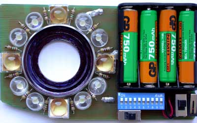
Кольцевая лампа для макро съёмки
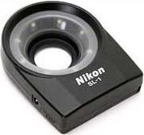
Nikon SL-1
У меня были камеры Nikon cp880 и cp4500, которые могли снимать при расстоянии от объектива 2-4см. Для подсветки объекта на таком расстоянии Nikon выпускает кольцевую светодиодную лампу SL-1. У неё не очень яркие светодиоды (рекомендуемое расстояние до объекта не более 12см) и довольно дорогие литиевые батарейки.
Кроме макросъёмки, кольцевая лампа пригодится, если нет подсветки автофокуса или ручного фокуса. При фотографировании "мышки в норке" лампа выполняет функцию фонарика - без неё объект вообще не виден.
Главное свойство кольцевой лампы - она не даёт теней.
Фотолюбители делают похожие лампы, приспособленные к разным объективам и камерам. Я решил сделать лампу для макро-съёмки на аккумуляторах более яркую, чем Nikon SL-1 , хотя и менее экономичную. Лампа даёт освещение достаточное для съёмки с рук на расстоянии до 1 метра в темноте. Теперь можно фотографировать пауков и бабочек в лесу или в пасмурную погоду, когда не хватает света для автофокусировки.
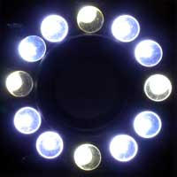
При изготовлении своей конструкции выбирайте светодиоды с широким лучом света. Их надо направить к центру, чтобы при расстоянии до объекта 4-5 см центр кадра был освещён. Для рассеивания света можно использовать белый пластик, как у Никона. Это позволяет уменьшить расстояние до объекта, но уменьшает освещённость. Вместо светодиодов можно использовать лампы накаливания, если у вас нет проблем с электропитанием, например, в студии. Но в студии нет полевых цветов и кузнечиков.
Желательно выбирать белые светодиоды, но обычно они менее яркие и более дорогие. Я использовал 8 голубых светодиодов FYL-10 (по 45 руб) и 4 белых светодиода СДК-Б (по 110 руб). Это цены 2004 года. При одинаковом токе FYL-10 светит вдвое сильнее, чем СДК-Б. В схеме есть возможность отключить голубые светодиоды. Но обычно я включаю все светодиоды и использую баланс белого, сделанный под эту лампу.
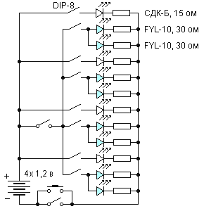
Простая схема
Кроме выключателя голубых светодиодов в моей конструкции лампы есть переключатель, позволяющий включить почти каждый светодиод независимо. Это позволяет, например, создать рассеянное боковое освещение, но пока я это не использовал. Первый опыт показал, что нужна только максимальная мощность.
Каждый светодиод должен быть включён через свой резистор. В этой схеме резисторы подобраны так, чтобы рабочий ток через светодиод был около 50 ма. В сумме - 12*50=600 ма. При ёмкости аккумуляторов 700-1000 ма-час хватает больше, чем на час. При прогулке по лесу можно брать с собой запасной комплект.
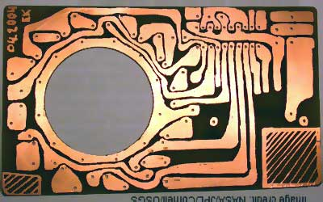
Плата
Перед началом разработки платы полезно иметь в руках кольцо для крепления устройства к объективу и все прочие детали
- вырезаем плату и отверстие
- рисуем разводку краской или маркером
- травим в растворе хлорного железа
- смываем краску
- сверлим отверстия 0.9мм для выводов деталей
- облуживаем медь около отверстий
- припаиваем резисторы и светодиоды
- отмываем флюс
- устанавливаем держатель батареек и переключатели
- прикрепляем кольцо для крепления к объективу
Для увеличения жёсткости зазор между светодиодом и платой можно заполнить герметиком. Переходное кольцо должно быть достаточно высоким, чтобы светодиоды не освещали объектив. Чтобы ещё уменьшить засветку нужно закрасить внутреннюю поверхность кольца чёрным фломастером.
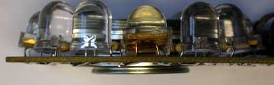
Светодиоды немного наклонены к центру
Для привинчивания к объективу камеры Nikon cp4500 использовано 2 переходных кольца 28х37мм и 37х42мм. Печатная плата на стыке двух колец может вращаться вокруг оси на трении. Слева внизу угол платы отрезан, чтобы она не закрывала лампу вспышку при размещении кнопки под правую руку. Если плата повёрнута так, чтобы нажимать кнопку левой рукой, то нужно левой рукой удерживать лампу в таком положении, чтобы она не закрывала вспышку. Если не использовать вспышку, то положение кнопки не имеет значения. Вес вместе с 4 аккумуляторами ААА - 80 г. Не уверен, что этому устройству нужен корпус.
Примеры фотографий
фото 1
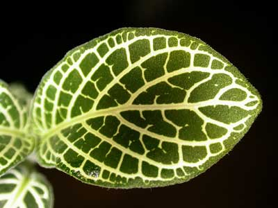
1. При расстоянии менее 5 см затемнён центр.
Расстояние от листка до объектива 4 см. Фокусное расстояние 17мм, диафрагма 3.5, выдержка 1/56сек, ISO 200. Полный кадр.
Тёмное пятно в центре получилось потому, что лучи света от светодиодов недостаточно широки. Они пересекаются дальше, чем на расстоянии 4 см.
фото 2
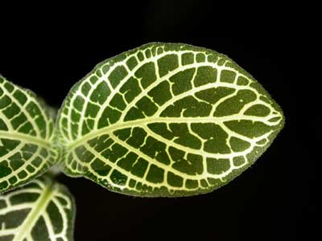
2. Расстояние от листка до объектива 5 см. Фокусное расстояние 17мм, диафрагма 3.5, выдержка 1/120сек, ISO 200. Полный кадр.
Для съёмки на расстоянии 2-5 см можно прикрепить к внешнему переходному кольцу полупрозрачный белый пластиковый конус. Конус закрывает прямой свет от светодиодов и рассеивает свет внутрь. Для эксперимента я делал такой конус из тонкой бумаги. Освещение становится равномерным, а яркость света при таких малых расстояниях остаётся достаточной. Эта идея применена в лампе Nikon SL-1.
фото 3
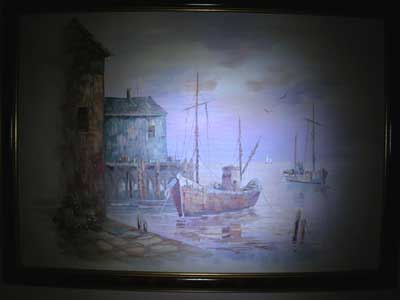
3. При большом расстоянии до объекта и малом фокусном расстоянии затемнены края кадра .
На фото вы видите освещённую середину картины. Расстояние от картины до объектива 80 см. Фокусное расстояние 8мм, диафрагма 3.3, выдержка 1/51сек, ISO 200. Полный кадр.
Луч от лампы недостаточно широкий. Яркость позволяет фотографировать в темноте. Можно считать, что диапазон расстояний, освещаемый этой лампой: от 5см до 1м. Нет смысла рассеивать свет на большую площадь. Освещение на расстоянии метр и более итак уже невелико. Для таких расстояний есть лампа-вспышка.
фото 4
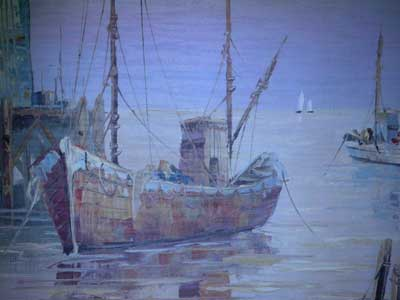
4. При увеличенном фокусном расстоянии освещение достаточно равномерное и сильное на расстоянии до 1 метра.
Расстояние от картины до объектива 80 см. Фокусное расстояние 22мм, диафрагма 4, выдержка 1/46сек, ISO 200. Полный кадр.
Лампу можно применять для подсветки фокуса на расстоянии до 3 метров. При этом нужно фотографировать со штатива или со вспышкой. При соответствующем повороте эта лампа не затеняет штатную вспышку камеры Nikon 4500.
фото 5
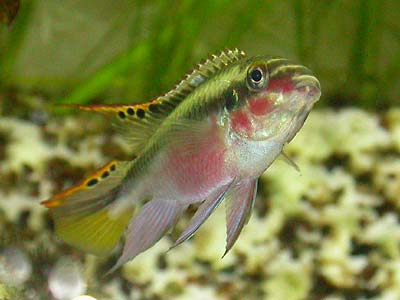
5. Расстояние 20см, фокус 20мм, диафрагма 3.9, выдержка 1/52сек, ISO 800.
При фотографировании рыбок освещение достаточное, чтобы сфокусироваться и чтобы не было смазывания при движении рыбы. Слева внизу видны отражения светодиодов. Чтобы блики не попали в центр я снимаю под углом к стеклу. Часть света теряется из-за отражения от стекла.
Раньше, при освещении вспышкой я устанавливал фиксированную фокусировку, например 15см, и ловил момент, когда рыбка попадёт в фокус. Процент попаданий был очень маленький. И вспышка и боковой источник света давали нежелательные тени.
фото 6
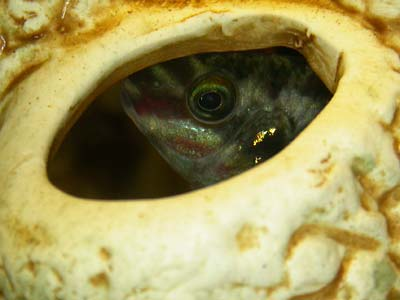
6. Можно сфокусироваться по объекту в глубине тёмной зоны, где он вообще не виден при боковом освещении.
Расстояние до рыбки 20см, фокусное расстояние 28мм, диафрагма 4.6, выдержка 1/43сек, ISO 200. Часть кадра.
В этом примере, рыбка цихлида-попугай находится внутри тёмной пещеры. Центральное освещение позволяет сфокусироваться по рыбке. Лампа прижата к стеклу. Поэтому бликов нет и потери света меньше.
2004-04-16